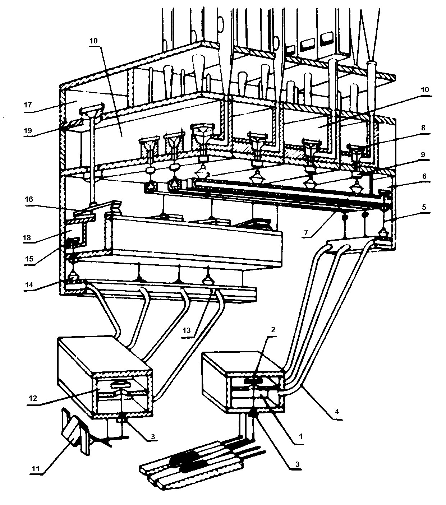

V nástroji s pneumatickou trakturou je médiem, které zprostředkovává
přenos impulsu od klávesy k ventilu ve vzdušnici stlačený vzduch. Spojení
mezi klávesami a akčními členy (ventily) tak nevede přes abstrakty,
úhelníky, páky či hřídele či jiné prvky (využívané v mechanické
traktuře), které by kladly pohybu odpor, ale přes stlačený vzduch
vedený tenkými trubičkami (rourkami), někdy též nazývanými kondukty.
Takovýto systém též bývá někdy nazýván „rourková pneumatika“.
|
Pneumatická traktura varhan je dvojího druhu: hrací - tónová, přenášející stisk klávesy manuálu či pedálu na ventil ve vzdušnici a rejstříková - přenášející pohyb rejstříkových sklopek na rejstříkové ventily či zásuvky. Součástí traktury jsou i pomocná zařízení a spojky. Pneumatická traktura je složena z celé řady pneumatických komponentů (míšků, membrán, různých druhů ventilů...). Na následujícím obrázku jsou zobrazeny varhany s kuželkovou vzdušnicí, která je ovládána pomocí pneumatické traktury (hrací i rejstříkové): |

|
Řez varhanami s pneumatickou trakturou a kuželkovou vzdušnicí. Legenda: 1- relé, 2- výpustný ventil, 3- kontraventil, 4- rourka, 5- kuželka, 6- relé, 7- míšek, 8- kuželka, 9- kontraventil, 10- rejstříková kancela, 11-rejstříková sklopka, 12- rejstříkové relé, 13- rejstříkové relé, 14- míšek, 15- kuželka, 16- míšek, 17- vzdušnice, 18- rejstříkové relé, 19- píšťalnice |
Popis funkce - po stisknutí klávesy se otevře ventil 2 relé 1 v hracím stole, vpustí vzduch do rourky 4 a nadme míšek – membránu. Roznosová ploténka na hřbetě míšku nadzvedne kuželku 5 v relé 6 a ta vpustí vzduch do duté lišty – konduktu pod vzdušnicí. Na liště jsou nalepeny míšky 7, které (pro každý rejstřík zvlášť) nadzdvihnou kuželkové ventily 8 ve vzdušnici a vpustí vzduch z rejstříkových kancel 10 do píšťaly. Aby příslušná píšťala zazněla, musí mít vzduch příslušného tlaku i ve své rejstříkové kancele. O jeho vpuštění či uzavření se stará rejstříková traktura. Sklopka 11 v hracím stole ovládá ventil 3, vpouštějící stlačený vzduch konduktem k míšku (membráně) 14 v relé 13. Membrána nadzvedne kuželku 15 relé a to vpustí vzduch do podstatně většího míšku 16, který zvedne kuželku rejstříkového ventilu. Obě traktury tedy neovládají akční členy (tónové a rejstříkové ventily) přímo, ale pomocí několika stupňů (vložené míšky, relé…). Důvody jsou rozvedeny dále v textu na dalších stranách (komponenty pneumatické traktury, pneumatická tónová traktura, pneumatická rejstříková traktura, pneumatické spojky). |
Na dalších stránkach jsou popsány komponenty pneumatické traktury, tónová traktura, rejstříková traktura, spojky, pneumatická pomocná zařízení pak v kapitolách o crescendu a kolektivech a volných kombinacích. |
Poznámka: Tato stránka je součástí Anatomie varhan ®, © Ing. Petr Bernat. Všechny animace © Konrad Zacharski